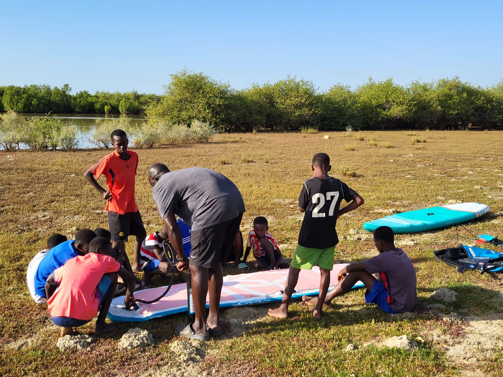

Le fleuve Sénégal comme point de départ d'un mouvement
Une alliance entre nature, culture et jeunesse, ancrée au cœur du delta. The Flow Sénégal réunit habitants, sportifs et associations pour prendre soin du fleuve et célébrer la vie qu'il relie.
“Notre rêve, c'est que chaque enfant de Saint-Louis grandisse en regardant le fleuve comme un ami à protéger.”
— Pape Mbaye, président de The Flow SénégalUn patrimoine mondial menacé, une mobilisation nécessaire
Classée au patrimoine mondial de l'UNESCO, Saint-Louis incarne l'histoire et la richesse culturelle de l'Afrique de l'Ouest. Surnommée la “Région du Fleuve”, son développement est lié au fleuve Sénégal.
Cependant, les berges, autrefois lieux de vie et de célébration, sont aujourd'hui jonchées de déchets. The Flow Sénégal ambitionne de changer cette réalité et de rendre au fleuve son rôle central dans la vie économique, sociale et écologique.
Découvrir notre mission
Deux jours d'action et de partage
Initiation paddle
Découverte du fleuve sous un angle ludique pour les enfants du quartier de Diamaguène.
Grand clean-up
Mobilisation citoyenne pour nettoyer les berges avec habitants et associations locales.
Fresques collectives
Mise en valeur des quais par des animations et décorations artistiques.
Match de gala
Football et fraternité entre jeunes du quartier et bénévoles de The Flow Sénégal.
Parade nautique
Paddlers, kayakistes et la Fédération Sénégalaise de Canoë-Kayak sur le fleuve.
Sensibilisation
Rencontres avec commerçants, élus et médias pour une collaboration durable.
Rejoignez le mouvement
The Flow Sénégal, ce n'est pas seulement un événement, c'est un mouvement pour un avenir plus respectueux de l'environnement. Ensemble, redonnons au fleuve Sénégal sa beauté.
Ou contactez-nous directement : contact@theflowsenegal.org